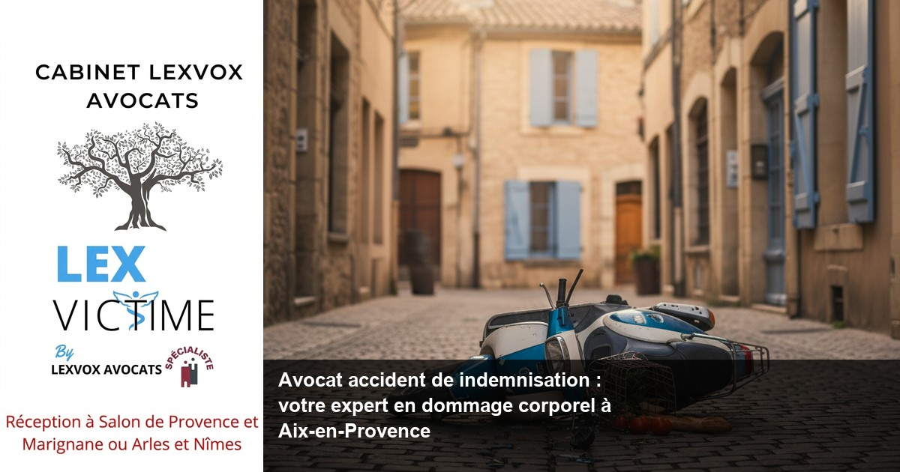

Accident de la route — Aix-en-Provence
Avocat accident de scooter à Aix-en-Provence : indemnisation et dommage corporel

— Par Me Patrice Humbert, avocat au barreau d'Aix-en-Provence
Victime d'un accident de scooter à Aix-en-Provence ? Vous avez droit à une indemnisation juste et complète. Me Patrice Humbert, avocat spécialisé en dommage corporel avec plus de 20 ans d'expérience, défend vos droits face aux assurances. Cabinet LEXVOX AVOCATS : consultation gratuite, contactez-nous au 04 90 54 58 10.
Obtenir la meilleure indemnisation possible : indemnisation des victimes et droit du dommage corporel à Aix-en-Provence
Les enjeux de l'indemnisation après un accident de scooter
Un accident de scooter peut bouleverser votre vie en quelques secondes. Que vous circuliez sur l'A8, l'A51 ou les axes de centre-ville d'Aix-en-Provence, les conséquences d'un accident peuvent être dramatiques. L'indemnisation des victimes constitue un droit fondamental inscrit dans le droit du dommage corporel français.
Selon l'expérience du cabinet (20+ ans, centaines de dossiers), les victimes d'accidents de scooter subissent souvent des préjudices multiples : blessures corporelles, séquelles permanentes, arrêt de travail prolongé, souffrances physiques et morales. Chaque préjudice corporel doit faire l'objet d'une évaluation minutieuse pour garantir une réparation intégrale.
La spécificité du dommage corporel en cas d'accident de deux-roues
Les accidents de scooter présentent des particularités que seul un avocat spécialisé en dommage corporel maîtrise parfaitement. La vulnérabilité du conducteur de deux-roues expose à des blessures graves : traumatismes crâniens, fractures multiples, lésions médullaires. L'expertise médicale revêt donc une importance cruciale.
Le droit de la réparation évolue constamment. La jurisprudence de nos confrères à Paris et Bordeaux enrichit régulièrement notre approche. Chaque cas d'accident nécessite une analyse personnalisée des circonstances, de la responsabilité et de l'ensemble des préjudices subis.
L'importance d'agir rapidement après l'accident
Le temps joue contre les victimes d'accidents. Les compagnies d'assurance mobilisent immédiatement leurs experts pour minimiser leur indemnisation. Face à cette réalité, la présence d'un avocat expérimenté devient indispensable dès les premières heures suivant l'accident.
Accompagner par un avocat : un accident de la route et faire appel à un avocat à Aix-en-Provence
Pourquoi faire appel à un avocat spécialisé ?
Suite à un accident de scooter, faire appel à un avocat constitue votre meilleur atout. Un avocat spécialisé en indemnisation maîtrise tous les aspects du droit du dommage corporel : évaluation des préjudices, négociation avec les assurances, procédures judiciaires.
L'assistance d'un avocat vous protège des tentatives de minoration de votre indemnisation. Les assureurs disposent de moyens considérables : médecins-conseils, experts, juristes. Seul un avocat expert peut rétablir l'équilibre et défendre efficacement vos intérêts.
L'accompagnement personnalisé du cabinet LEXVOX
Me Patrice Humbert, premier avocat certifié IA de France, met son expertise au service des victimes d'accidents à Aix-en-Provence. Avec 4 bureaux dans les Bouches-du-Rhône (Aix-en-Provence, Salon-de-Provence, Arles, Marignane), le cabinet assure une proximité géographique essentielle.
Selon l'expérience du cabinet (20+ ans, centaines de dossiers), l'accompagnement par un avocat dès la phase amiable permet d'obtenir des indemnisations significativement supérieures. Chaque étape de la procédure est maîtrisée : constitution du dossier, expertise médicale, négociation avec la compagnie d'assurance.
La stratégie juridique adaptée à votre situation
Chaque accident de la route présente ses spécificités. L'avocat analyse les circonstances de l'accident, identifie les responsabilités, évalue l'ensemble de vos préjudices. Cette analyse permet de déterminer la stratégie la plus efficace : négociation amiable ou action judiciaire.
Expert en indemnisation : défense des victimes et réparation intégrale à Aix-en-Provence
L'expertise médicale : étape cruciale de votre indemnisation
L'expertise médicale constitue le cœur de votre dossier d'indemnisation. Cette étape détermine l'étendue de vos séquelles et conditionne votre indemnisation future. Un avocat de victimes expérimenté vous accompagne lors de cette expertise capitale.
Le médecin-conseil de victimes, choisi par votre avocat, défend vos intérêts face à l'expert désigné par l'assurance. Cette présence médicale spécialisée garantit une évaluation juste de vos préjudices corporels.
Les différents postes de préjudice à évaluer
Selon l'expérience du cabinet (20+ ans, centaines de dossiers), un accident de scooter génère généralement plusieurs postes de préjudice :
Préjudices patrimoniaux :- Frais médicaux et pharmaceutiques
- Perte de revenus pendant l'arrêt de travail
- Incidence professionnelle définitive
- Frais de logement adapté
- Souffrances endurées
- Préjudice esthétique
- Préjudice d'agrément
- Préjudice sexuel
La réparation intégrale : un principe fondamental
La réparation intégrale constitue le principe directeur du droit du dommage corporel français. Chaque préjudice subi doit être intégralement réparé, sans enrichissement ni appauvrissement de la victime. Cette exigence nécessite une évaluation précise et exhaustive de tous vos dommages.
Accident de la vie : avocat de victimes et avocat spécialisé à Aix-en-Provence
Les accidents de la vie courante et leur indemnisation
Au-delà des accidents de la route, les accidents de la vie courante touchent de nombreuses personnes. Chutes, accidents domestiques, accidents de sport : chaque situation nécessite une approche juridique spécifique. Un avocat spécialisé maîtrise ces différents régimes d'indemnisation.
Les victimes d'erreurs médicales bénéficient également de notre expertise. La loi du 4 mars 2002 relative aux droits des malades et à la qualité du système de santé a renforcé les droits des patients. Les métiers de la santé engagent leur responsabilité en cas de faute, notamment lors d'une maladie infectieuse contractée lors d'un soin.
La diversité des accidents couverts
Selon l'expérience du cabinet (20+ ans, centaines de dossiers), les accidents de la vie présentent une grande variété :
- Accidents de la circulation (voiture, moto, scooter, vélo)
- Accidents du travail et maladies professionnelles
- Accidents médicaux et infections nosocomiales
- Accidents de sport et de loisirs
- Agressions et infractions
L'expertise médicale dans les différents types d'accidents
Chaque type d'accident nécessite une expertise médicale adaptée. L'évaluation des séquelles d'un traumatisme crânien diffère de celle d'une infection nosocomiale. Votre avocat coordonne l'intervention des spécialistes médicaux appropriés.
Une indemnisation : assurance et expertise à Aix-en-Provence
Le rôle des compagnies d'assurance
Les compagnies d'assurance jouent un rôle central dans l'indemnisation des accidents. Leur objectif légitime de maîtrise des coûts peut entrer en conflit avec votre droit à une indemnisation juste. Cette tension nécessite l'intervention d'un avocat pour rétablir l'équilibre.
Selon l'expérience du cabinet (20+ ans, centaines de dossiers), les assureurs utilisent diverses stratégies pour limiter les indemnisations : contestation de la responsabilité, minimisation des préjudices, délais de traitement prolongés.
L'expertise contradictoire : garantie d'équité
L'expertise contradictoire permet un débat équitable entre les parties. Votre avocat organise cette expertise en désignant des spécialistes compétents : médecin-conseil de victimes, expert en évaluation du préjudice professionnel, expert en préjudice d'agrément.
Les différents régimes d'indemnisation
Le droit français prévoit plusieurs régimes d'indemnisation selon la nature de l'accident :
Accidents de la circulation : Loi Badinter du 5 juillet 1985, qui facilite l'indemnisation des victimes d'accidents de la route. Accidents médicaux : Dispositif ONIAM (Office National d'Indemnisation des Accidents Médicaux) pour les accidents médicaux les plus graves. Accidents du travail : Régime spécial de la Sécurité sociale avec possibilité de recours complémentaire.Préjudice et honoraire : votre avocat à Aix-en-Provence
La structure tarifaire transparente du cabinet LEXVOX
Me Patrice Humbert pratique une politique tarifaire transparente adaptée aux enjeux de votre dossier. Les honoraires comportent deux composantes :
Part fixe : À partir de 700 EUR HT, calculée selon la complexité du dossier Part de résultat : 10 à 15% de l'indemnisation obtenueCette structure aligne les intérêts de votre avocat sur les vôtres : plus votre indemnisation est élevée, plus votre avocat est rémunéré. Cette approche garantit un engagement total dans la défense de vos droits.
La consultation gratuite : un premier pas sans engagement
Le cabinet LEXVOX offre une consultation gratuite de 30 minutes pour évaluer votre dossier. Cette première approche permet d'analyser vos droits, d'estimer vos chances d'obtenir une indemnisation et de définir la stratégie juridique optimale.
Le financement de votre procédure
Différentes solutions facilitent le financement de votre procédure :
Protection juridique : Vérifiez si votre contrat d'assurance inclut une garantie protection juridique Aide juridictionnelle : Sous conditions de ressources, l'État peut prendre en charge vos frais de justice Financement par le cabinet : Dans certains cas, le cabinet peut différer le paiement de ses honorairesProcédure d'indemnisation à Aix-en-Provence : les étapes avec LEXVOX AVOCATS
Phase d'urgence : les 48 premières heures
Les premières heures suivant l'accident sont cruciales. Votre avocat intervient immédiatement pour :
Préservation des preuves : Constitution d'un dossier technique complet (photos, témoignages, rapports de police) Déclaration d'accident : Assistance dans vos démarches auprès des assurances Soins médicaux : Orientation vers les services d'urgence appropriés (Centre hospitalier du Pays d'Aix, Clinique Axium)Phase médicale : suivi et expertise
La phase médicale s'étend de quelques mois à plusieurs années selon la gravité de vos blessures :
Suivi médical : Coordination avec vos médecins traitants Constitution du dossier médical : Centralisation de tous les éléments médicaux Préparation à l'expertise : Formation aux enjeux de l'expertise médicale contradictoirePhase de négociation : optimisation de votre indemnisation
Selon l'expérience du cabinet (20+ ans, centaines de dossiers), la négociation amiable permet souvent d'obtenir une indemnisation satisfaisante dans des délais raisonnables :
Évaluation des préjudices : Chiffrage précis de chaque poste de préjudice Négociation avec l'assureur : Discussion des offres d'indemnisation Optimisation fiscale : Structuration de l'indemnisation pour minimiser la fiscalitéPhase judiciaire : saisine du Tribunal judiciaire d'Aix-en-Provence

Vos questions sur avocat accident de indemnisation : votre expert en dommage c
Combien de temps dure une procédure d'indemnisation ?
La durée varie selon la complexité du dossier. Selon l'expérience du cabinet (20+ ans, centaines de dossiers), une procédure amiable dure entre 12 et 24 mois après consolidation médicale. Une procédure judiciaire peut s'étendre sur 3 à 5 ans. L'intervention précoce d'un avocat permet d'accélérer significativement les délais.
Puis-je obtenir une indemnisation même si je suis partiellement responsable ?
Oui, la loi Badinter protège particulièrement les conducteurs de deux-roues. Même en cas de faute contributive, vous conservez le droit à une indemnisation pour vos dommages corporels. Seule une faute inexcusable caractérisée peut limiter votre indemnisation, ce qui reste exceptionnel.
Comment est évaluée mon incapacité permanente ?
L'incapacité permanente partielle (IPP) est évaluée lors de l'expertise médicale selon un barème médical. Cette évaluation conditionne directement votre indemnisation. La présence d'un médecin-conseil de victimes est essentielle pour obtenir un taux d'IPP juste et défendre vos intérêts.
Que faire si l'assurance propose une indemnisation insuffisante ?
Ne signez jamais une première offre d'indemnisation sans l'avis de votre avocat. Selon l'expérience du cabinet, les premières offres sous-évaluent systématiquement les préjudices. Votre avocat négocie une revalorisation significative ou engage une procédure judiciaire si nécessaire.
Comment financer les frais d'avocat ?
Plusieurs solutions existent : protection juridique de votre assurance, aide juridictionnelle selon vos ressources, ou prise en charge différée par le cabinet. La consultation gratuite de 30 minutes permet d'évaluer ces options sans engagement financier.
Quels documents dois-je conserver après l'accident ?
Conservez tous les documents : constats d'accident, rapports de police, certificats médicaux, factures, arrêts de travail, témoignages. Votre avocat vous guide dans la constitution du dossier et centralise tous ces éléments essentiels à votre indemnisation.
Synthèse : votre droit à la réparation intégrale ?
En matière de droit du dommage corporel, chaque victime d'un accident bénéficie d'un droit fondamental à la réparation intégrale. L'indemnisation préjudice corporel constitue un domaine complexe nécessitant l'intervention d'un avocat spécialiste expérimenté. Lorsque vous êtes victime d'un accident de scooter à Aix-en-Provence, l'indemnisation intégrale de tous vos préjudices devient votre priorité absolue. L'indemnisation accident implique une évaluation précise de chaque préjudice subi. Pour obtenir une indemnisation optimale, il convient de faire appel à un avocat dès que possible après l'accident. L'arrêt de travail, les souffrances physiques et morales, l'incapacité permanente nécessitent une expertise médicale rigoureuse. La réparation du dommage corporel s'appuie sur des principes juridiques stricts que seul un avocat spécialisé en indemnisation maîtrise parfaitement. Se faire accompagner par un avocat garantit la défense optimale de vos droits des victimes. Un avocat expérimenté connaît les stratégies des compagnies d'assurance et sait comment les contrer efficacement. La réparation du préjudice corporel exige l'intervention d'un avocat expert capable de défendre les victimes face aux assureurs. Suite à un accident, le médecin-conseil de victimes choisi par votre avocat évalue chaque poste de préjudice avec précision. Obtenir la meilleure indemnisation possible nécessite une stratégie juridique adaptée. Une indemnisation juste résulte d'une négociation équilibrée où les indemnisations proposées correspondent réellement aux préjudices subis. Les accidents de la vie courante, comme les victimes d'accidents de la route, méritent une indemnisation complémentaire pour couvrir l'intégralité des dommages. La présence d'un avocat lors des expertises médicales s'avère déterminante. L'assistance d'un avocat spécialisé permet d'optimiser l'indemnisation d'un accident en identifiant tous les préjudices. Les victimes d'accidents bénéficient ainsi d'un accompagnement professionnel tout au long de la procédure. Dès qu'un accident survient, identifier le responsable de l'accident et engager la compagnie d'assurance devient prioritaire. La défense des victimes d'accidents constitue notre mission quotidienne. Chaque victime d'accident mérite une représentation juridique de qualité. L'analyse des circonstances de l'accident permet d'optimiser la procédure d'indemnisation. Les victimes d'accident peuvent ainsi compter sur notre expertise pour faire valoir leurs droits face aux compagnies d'assurance. Votre droit à la réparation intégrale mérite une défense professionnelle. Cabinet LEXVOX AVOCATS met son expertise au service des victimes d'accidents à Aix-en-Provence. Contactez-nous au 04 90 54 58 10 pour une consultation gratuite et découvrez comment optimiser votre indemnisation.
Procédure d'indemnisation à Aix-en-Provence : les étapes avec LEXVOX ?
Première consultation gratuite — 30 min
Besoin d'un avocat spécialisé à Aix-en-Provence ? Nous évaluons votre dossier gratuitement et vous indiquons vos droits à réparation.
Cabinet LEXVOX AVOCATS — Me Patrice Humbert — Spécialisation CNB dommage corporel — Bureaux à Aix-en-Provence, Salon-de-Provence, Arles et Marignane